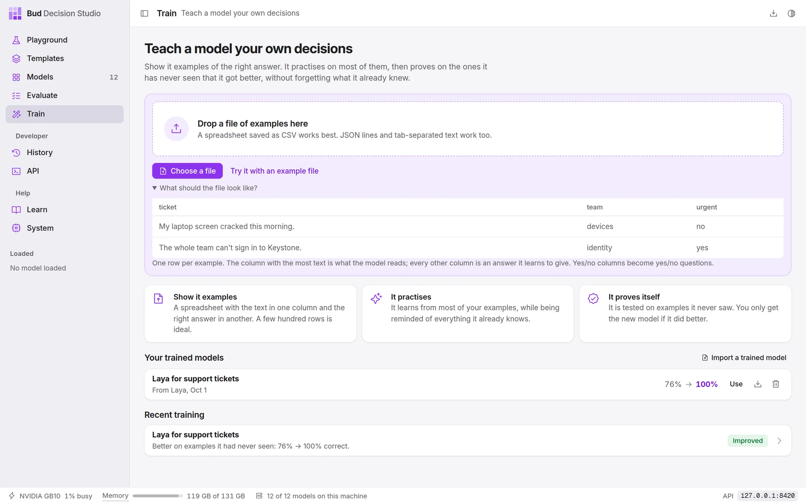

DocsGuides
Teach a model your own decisions
When a model doesn't decide the way your team would, show it. This guide takes a spreadsheet of past decisions to a trained model your code can call, and says what to do when the studio doesn't keep the result.
Prepare your examples#
A training file is a list of past situations with the answer you would give. The simplest is a spreadsheet saved as CSV: one column with the text, and one column per answer.
ticket,team,urgent"Can't sign in since the password reset this morning",identity,yes"Refund for a double charge on invoice 4412",payments,no"The Harbor VPN drops every few minutes from the Pune office",network,no
From this file the studio builds two questions: team, a Pick one question with the team names it found, and urgent, a Yes or no question asked as "Is this urgent?". You can reword both before training.
What makes a good file:
| Why | |
|---|---|
| A few hundred rows. At least 30 answered questions are needed; with 30 to 300, only large improvements can be told apart from luck, and the result says so. 300 to 2,000 is the sweet spot. | The studio keeps about a third of your examples aside to test the result. |
| Every answer represented. Ten to twenty examples of each answer at least. | A rare answer can't be learned; one answer for everything is refused. |
| Real examples, messy as they come. | The model learns what it is shown. Exact copies of a situation are kept on the same side of the train/test split, so they can't inflate the score. |
| Consistent answers. | If two people would answer an example differently, the model learns that uncertainty and its percentages reflect it. That is fine. |
Text in any language works with the multilingual models; the studio notices when examples aren't in English and recommends one of them.
The standard format#
For questions a table can't express (scales with named levels, pick-all-that-apply, option descriptions, or different questions on different rows) use JSON lines: one example per line, written as a decision request plus the right answers.
{"state": "Order 1182 arrived with a cracked screen", "questions": {"team": {"type": "choice", "instructions": "Which team should handle this?", "criteria": {"returns": "damaged or wrong items", "billing": "charges and refunds"}}, "urgent": {"type": "noul", "instructions": "Does this need attention today?"}, "impact": {"type": "score", "instructions": "How bad is it for the customer?", "criteria": ["minor", "moderate", "severe"]}}, "answers": {"team": "returns", "urgent": false, "impact": "moderate"}, "group": "customer-0412"}| Field | Meaning | |
|---|---|---|
state |
required | the situation: text, or an object or list |
questions |
required | the question definitions a decision request takes |
answers |
required | the right answer per question; leave out a question whose answer you don't know |
group |
optional | examples that share a situation (one customer, one document) stay together when the studio splits train from test |
split |
optional | train, calibration or test, to fix where an example goes |
media |
optional | images, audio or video for the models that read them: [{"type": "image", "path": "/ |
id |
optional | your own reference |
How to write an answer:
| Question type | Answer |
|---|---|
Pick one (choice) |
the option's name or its description; capital letters don't matter |
Yes or no (noul) |
true or false, "yes" or "no" |
Rate on a scale (score) |
the level's text, or its number counting from 0 |
Pick any (multi) |
a list of option names |
Put in order (rank) |
the top option's name |
Estimate a number (number) |
a number; the nearest listed value is used |
| any type | {"probabilities": {"a": 0. when the honest answer is "probably a" |
The files the Evaluate page reads (tab-separated text and answer, CSV with text and label, JSON lines with text and label) work as they are, and so does a typed-decisions style gold field.
Train#
- Open Train and add the file. Drop it on the page or choose Choose a file. The page lists the questions it found and any problems.
- Check the questions. Reword each instruction the way you would ask it; the model will be asked it in exactly those words later.
- Check the model and the time. The recommendation suits most tasks. Choose Change model for another; models that can't learn these examples say why.
- Name the new model and choose Start teaching. You can leave the page; training continues, and the Train page shows it at the top.
On an NVIDIA GB10 shared with other work, the studio's tests took 8 minutes for 420 support tickets on Julia 1, 25 to 30 minutes for about a thousand examples on Laya, about an hour on the 4B models and over two hours on Jev-Omni.
Read the result#
The result page gives two numbers. Correct on questions it had never seen is the one that matters: the studio set those examples aside before training and never trained on them. General decisions it already knew is the check that nothing was forgotten. One held-out example the original got wrong is shown with both answers.
- Use it now opens that example in the Playground with the new model.
- Compare on Evaluate loads the held-out examples into Evaluate with both models ticked: choose Run to see calibration and the act threshold each model supports.
When the result isn't kept#
The page names the reason. What usually helps:
| Reason | What to do |
|---|---|
| Didn't beat the original model | more examples, especially of rare answers; clearer instructions or option descriptions; or Teach another model instead |
| Got worse at general decisions | more varied examples; the studio has already retried once more gently |
| The same answer to almost everything | one answer dominates your file; add examples of the others |
| The original already gets almost all of them right | nothing to fix: use the original |
Use it from code#
A trained model has its own id, shown in the Playground's Code tab. Call it like any other model, or make it a template's default model.
Ask it the questions it was trained on, in the same words: that is where it improved. It still answers anything the original model could.
/v1/systemonecurl -s http://127.0.0.1:8420/v1/systemone -H 'content-type: application/json' -d '{ "model": "julia-1-ft-support-tickets", "state": "Quick one: In the Ledger invoice screen, a customer was charged twice.", "questions": {"team": {"type": "choice", "instructions": "Which team fits best?", "criteria": {"identity": null, "payments": null, "devices": null, "network": null, "data": null, "people": null}}, "urgent": {"type": "noul", "instructions": "Is this urgent?"}}}'{"model": "julia-1-ft-support-tickets", "answers": {"team": {"type": "choice", "choice": "payments", "probabilities": {"identity": 0.0003, "payments": 0.9911, "devices": 0.0006, "network": 0.0001, "data": 0.0002, "people": 0.0077}, "confidence": 0.9893}, "urgent": {"type": "noul", "noul": 0.0106}}, "usage": {"input_tokens": 91, "output_tokens": 0}}Move it to another computer#
On the Train page, Export on the model's row saves it as one .zip: the small file of changes and a record of how it was trained, not the whole model. On the other computer, choose Import a trained model on its Train page. The model it was trained from downloads there like any other model; the studio says if it needs it.